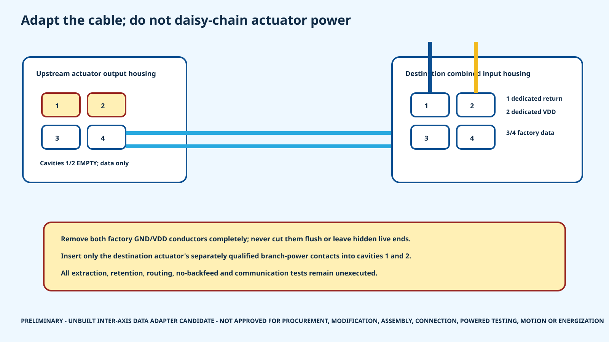

17
inter-axis cable adaptations
HR-30 whole-body P0.1
Factory data contacts stay intact. Factory power conductors come out. Each destination housing receives only its own protected branch-power contacts.
inter-axis cable adaptations
RS-485 X4P and TTL X3P links
factory power conductors removed completely
built, inspected, routed or communication-tested adapters

This is not an instruction to modify purchased cables yet. ROBOTIS does not publish approval for this adaptation, the extraction method is unresolved, and the received connector construction must be inspected first. The destination power contacts depend on the separately qualified actuator-power process.
| Adapter | Axis pair | Base SKU | Nominal length | Axis spacing | Data cavities | State |
|---|---|---|---|---|---|---|
| IAD-RS-LLEG-02 | L_HIP_YAW → L_HIP_ROLL | 903-0245-000 | 240 mm | 20.000 mm | 3,4 | UNBUILT CANDIDATE - RECEIVED CABLE, EXTRACTION, REINSERTION, ROUTE AND COMMUNICATION VALIDATION REQUIRED |
| IAD-RS-LLEG-03 | L_HIP_ROLL → L_HIP_PITCH | 903-0245-000 | 240 mm | 20.000 mm | 3,4 | UNBUILT CANDIDATE - RECEIVED CABLE, EXTRACTION, REINSERTION, ROUTE AND COMMUNICATION VALIDATION REQUIRED |
| IAD-RS-LLEG-04 | L_HIP_PITCH → L_KNEE_PITCH | 903-0245-000 | 240 mm | 160.000 mm | 3,4 | UNBUILT CANDIDATE - RECEIVED CABLE, EXTRACTION, REINSERTION, ROUTE AND COMMUNICATION VALIDATION REQUIRED |
| IAD-RS-LLEG-05 | L_KNEE_PITCH → L_ANKLE_PITCH | 903-0245-000 | 240 mm | 155.000 mm | 3,4 | UNBUILT CANDIDATE - RECEIVED CABLE, EXTRACTION, REINSERTION, ROUTE AND COMMUNICATION VALIDATION REQUIRED |
| IAD-RS-LLEG-06 | L_ANKLE_PITCH → L_ANKLE_ROLL | 903-0245-000 | 240 mm | 20.000 mm | 3,4 | UNBUILT CANDIDATE - RECEIVED CABLE, EXTRACTION, REINSERTION, ROUTE AND COMMUNICATION VALIDATION REQUIRED |
| IAD-RS-RLEG-02 | R_HIP_YAW → R_HIP_ROLL | 903-0245-000 | 240 mm | 20.000 mm | 3,4 | UNBUILT CANDIDATE - RECEIVED CABLE, EXTRACTION, REINSERTION, ROUTE AND COMMUNICATION VALIDATION REQUIRED |
| IAD-RS-RLEG-03 | R_HIP_ROLL → R_HIP_PITCH | 903-0245-000 | 240 mm | 20.000 mm | 3,4 | UNBUILT CANDIDATE - RECEIVED CABLE, EXTRACTION, REINSERTION, ROUTE AND COMMUNICATION VALIDATION REQUIRED |
| IAD-RS-RLEG-04 | R_HIP_PITCH → R_KNEE_PITCH | 903-0245-000 | 240 mm | 160.000 mm | 3,4 | UNBUILT CANDIDATE - RECEIVED CABLE, EXTRACTION, REINSERTION, ROUTE AND COMMUNICATION VALIDATION REQUIRED |
| IAD-RS-RLEG-05 | R_KNEE_PITCH → R_ANKLE_PITCH | 903-0245-000 | 240 mm | 155.000 mm | 3,4 | UNBUILT CANDIDATE - RECEIVED CABLE, EXTRACTION, REINSERTION, ROUTE AND COMMUNICATION VALIDATION REQUIRED |
| IAD-RS-RLEG-06 | R_ANKLE_PITCH → R_ANKLE_ROLL | 903-0245-000 | 240 mm | 20.000 mm | 3,4 | UNBUILT CANDIDATE - RECEIVED CABLE, EXTRACTION, REINSERTION, ROUTE AND COMMUNICATION VALIDATION REQUIRED |
| IAD-RS-LARM-02 | L_SHOULDER_PITCH → L_SHOULDER_ROLL | 903-0245-000 | 240 mm | 0.000 mm | 3,4 | UNBUILT CANDIDATE - RECEIVED CABLE, EXTRACTION, REINSERTION, ROUTE AND COMMUNICATION VALIDATION REQUIRED |
| IAD-RS-LARM-03 | L_SHOULDER_ROLL → L_ELBOW_PITCH | 903-0245-000 | 240 mm | 150.000 mm | 3,4 | UNBUILT CANDIDATE - RECEIVED CABLE, EXTRACTION, REINSERTION, ROUTE AND COMMUNICATION VALIDATION REQUIRED |
| IAD-RS-RARM-02 | R_SHOULDER_PITCH → R_SHOULDER_ROLL | 903-0245-000 | 240 mm | 0.000 mm | 3,4 | UNBUILT CANDIDATE - RECEIVED CABLE, EXTRACTION, REINSERTION, ROUTE AND COMMUNICATION VALIDATION REQUIRED |
| IAD-RS-RARM-03 | R_SHOULDER_ROLL → R_ELBOW_PITCH | 903-0245-000 | 240 mm | 150.000 mm | 3,4 | UNBUILT CANDIDATE - RECEIVED CABLE, EXTRACTION, REINSERTION, ROUTE AND COMMUNICATION VALIDATION REQUIRED |
| IAD-TTL-LDIST-02 | L_WRIST_ROTATION → L_GRIPPER | 903-0249-000 | 180 mm | 43.000 mm | 3 | UNBUILT CANDIDATE - RECEIVED CABLE, EXTRACTION, REINSERTION, ROUTE AND COMMUNICATION VALIDATION REQUIRED |
| IAD-TTL-RDIST-02 | R_WRIST_ROTATION → R_GRIPPER | 903-0249-000 | 180 mm | 43.000 mm | 3 | UNBUILT CANDIDATE - RECEIVED CABLE, EXTRACTION, REINSERTION, ROUTE AND COMMUNICATION VALIDATION REQUIRED |
| IAD-TTL-HEAD-02 | HEAD_PAN → HEAD_TILT | 903-0249-000 | 180 mm | 40.000 mm | 3 | UNBUILT CANDIDATE - RECEIVED CABLE, EXTRACTION, REINSERTION, ROUTE AND COMMUNICATION VALIDATION REQUIRED |
17-link register | Candidate BOM | Build traveler | Blank inspection records | Open holds | Primary sources
The eight controller-to-first-actuator harnesses are not hidden here; they remain a separate explicit open boundary.